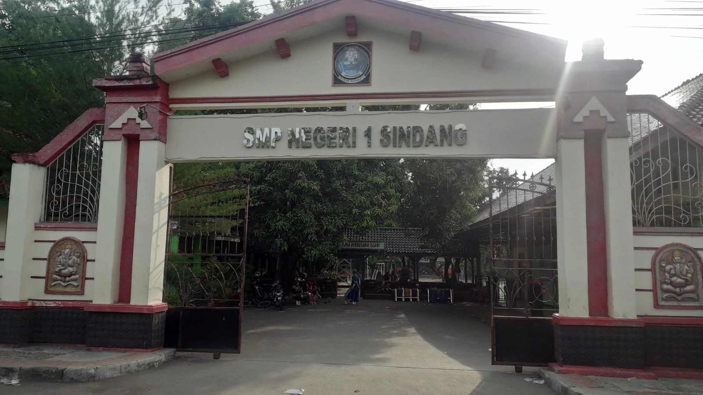

Tentang Diriku
Perkenalan singkat tentang diriku.
Saya Fanny Nurrachmi Hazani, lulusan Sarjana Terapan Akuntansi Perpajakan Universitas Diponegoro yang memiliki minat dalam bidang akuntansi, perpajakan, keuangan, dan administrasi bisnis. Saya menguasai berbagai kompetensi seperti Microsoft Office, E-Faktur, MYOB Accounting, penyusunan laporan keuangan, pencatatan transaksi, serta perhitungan PPN dan PPh.
Selama menempuh pendidikan, saya berhasil meraih IPK 3,92 serta memperoleh pengalaman profesional sebagai Staf Pajak Daerah di Badan Pendapatan Daerah Kabupaten Indramayu dan Finance Staff di PT Japannesia Language School. Saya juga telah memperoleh sertifikasi Certified Tax Technician (CTT) sebagai bentuk kompetensi di bidang perpajakan dan siap memberikan kontribusi secara profesional di dunia kerja.
Timeline Pendidikan
Perjalanan pendidikanku.
-

SD
SDN 3 Margadadi Indramayu
-

SMP
SMPN 1 Sindang
-

SMA
SMAN 1 Sindang
-
Sarjana (S1)
Akuntansi Perpajakan - Universitas Diponegoro
Keahlian
Kombinasi kemampuan teknis dan interpersonal yang terus kukembangkan.
Hard Skills
- Microsoft Office
- Financial Reporting
- MYOB Accounting
- Tax Administration
- E-Faktur
- PPN & PPh Calculation
Soft Skills
- Time Management
- Teamwork
- Communication
- Problem Solving
- Attention to Detail
- Continuous Learning
Prestasi
Beberapa prestasi yang telah diraih dalam perjalanan pendidikan dan pengalamanku.
-
Sarjana Terapan Akuntansi Perpajakan Universitas Diponegoro Predikat Cumlaude
Lulus sebagai Sarjana Terapan Akuntansi Perpajakan Universitas Diponegoro dengan predikat Cumlaude dan IPK 3,92 pada tahun 2025.
Lihat Sertifikat -
TOEFL Predictive Test
Mendapat predikat CEFR B1 (Intermediate) dengan skor 503 dalam prediksi tes kemampuan bahasa Inggris.
Lihat Sertifikat -
Certified Tax Technician
Telah memenuhi kualifikasi sebagai Certified Tax Technician (CTT) yang menunjukkan kompetensi dalam bidang perpajakan yang diselenggarakan oleh Asosiasi Teknisi Perpajakan Indonesia tahun 2025.
Lihat Sertifikat
Pengalaman
Beberapa pengalaman dan organisasi yang telah kujalani.
-
Kontrak Bidang Finance di PT Japannesia Language School
Bertanggung jawab dalam pengelolaan keuangan perusahaan, pembuatan invoice, penyusunan rencana belanja, tindak lanjut penagihan, serta pencatatan transaksi keuangan harian selama periode November 2025 hingga Februari 2026.
-
Magang Staff Pajak Daerah di BPD (Badan Pendapatan Daerah) Kabupaten Indramayu
Membantu dalam pengelolaan administrasi perpajakan daerah, termasuk pengumpulan data pajak, verifikasi dokumen, dan pelaporan pajak di BPD (Badan Pendapatan Daerah) Kabupaten Indramayu periode September 2024 hingga Januari 2025.
-
TAX Training center
Mengikuti pendidikan dan pelatihan Brevet Pajak A dan B pada tahun 2024.
-
Program KKN di Desa Pagundan
Mengikuti program KKN (Kuliah Kerja Nyata) di Desa Pagundan, Kota Pemalang, Jawa Tengah. Dengan output program, terdaftarnya 5 UMKM desa pada e-commerce dan membuatkan akun media sosial untuk mempromosikan produk UMKM desa tahun 2024.
-
Staf Hubungan Masyarakat di Himpunan Mahasiswa Akuntansi Perpajakan
Menyusun dan melaksanakan kegiatan sosialisasi kemasyarakatan melalui program kegiatan tahunan periode November 2022 - Mei 2023.
-
Master of Ceremony dan Ketua Humas Kegiatan Abdi Desa
Menjadi Master of Ceremony dan mengabdi sebagai Ketua Humas pada kegiatan Abdi Desa di Desa Kawengen, Kecamatan Ungaran, Kabupaten Semarang yang diselenggarakan oleh Himpunan Mahasiswa Akuntansi Perpajakan pada bulan desember tahun 2022.
-
Moderator Pada Acara Webinar Accounttax Business Corner
Memimpin jalannya acara webinar Accounttax Business Corner yang diselenggarakan oleh Himpunan Mahasiswa Akuntansi Perpajakan pada bulan desember tahun 2022.
Motto Hidup
“Work with integrity, learn continuously, and give your best in every opportunity.”